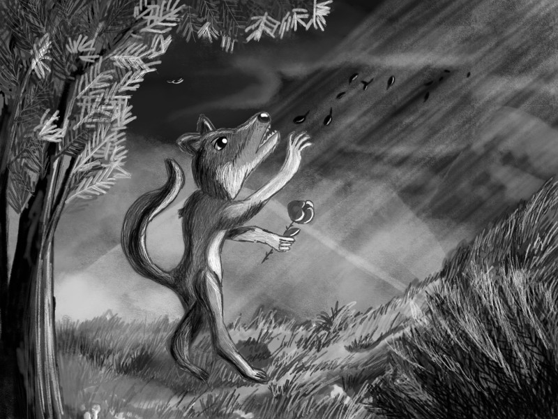

Défi de dessin hebdomadaire : Loup bizarre
Ne pas perdre la main après l’Inktober et continuer de créer; voilà un objectif bon à tenir.
Avec Diatomée, nous nous sommes dit qu’il fallait continuer à dessiner fréquemment, même après la fin de l’Inktober. C’est pourquoi nous avons décidé de nous lancer un petit défi pour créer un dessin par semaine, au minimum.
L’idée est simple : nous proposons chacun un nom ou un adjectif, à tour de rôle, ce qui constitue le thème auquel rapporter la création.
Pour cette première semaine, il s’agit de « loup bizarre ».
J’ai travaillé sur Sketchbook en utilisant le pinceau d’aquarelle que j’ai découvert et apprécié pendant le mois passé. J’ai d’abord travaillé le dessin en noir et blanc, en me penchant particulièrement sur le contraste et les reflets de lumière dans le but de coloriser ensuite les différents calques créés. Finalement, le dessin s’avère être meilleur en noir et blanc. Je dois donc encore apprendre à travailler sur les couleurs d’une image de nuit, où la scène est éclairée par la lune.
En revanche, j’ai beaucoup appris sur la composition et je suis satisfaite de celle-ci. Le loup attire bien le regard. Il est vraiment bizarre ce loupiot ^^.
